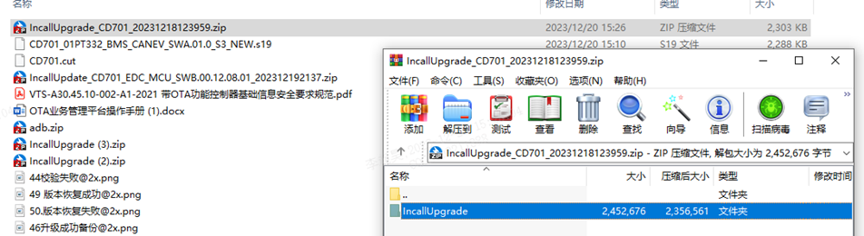
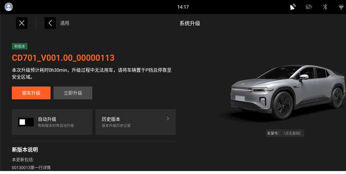
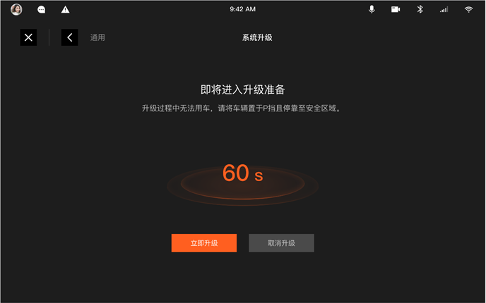
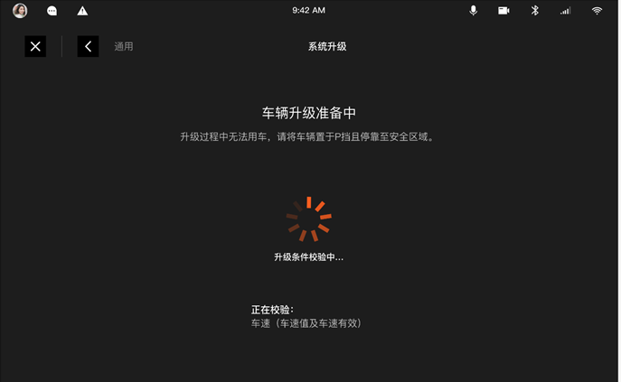
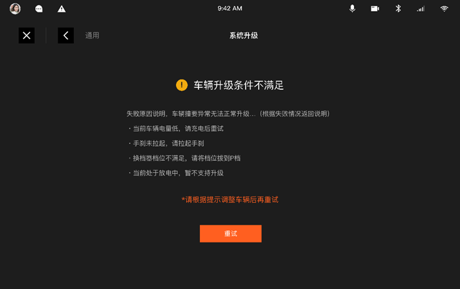

U盘升级准备工作
U盘升级需要的控制器：EDC以及需要升级的控制器。
U盘升级需要的工具：U盘、U盘制包工具，OTA团队提供。
U盘升级升级对象升级包要求：
FBL升级对象，如VIU/EDC MCU等准备对应的.sdb升级包(可以联系OTA系统工程师生成).
系统固件升级对象，如C2 OS/EDC A盒OS准备升级对象的压缩包。
联系对应的OTA系统工程师获取。
将下载的zip文件解压，将解压后的IncallUpgrade文件夹放入U盘根目录下即可。

注：U盘根目录下只能有一个要升级的IncallUpgrade文件夹，同名文件应删去。
1、若插入U盘，则会弹窗U盘包识别情况
点击“安装”
升级数据准备界面

拷贝完成后点击“立即升级”按钮
2、 进入升级阶段

点击“立即升级”跳过倒计时

进入升级条件校验界面

校验结束完成升级。
云端推送OTA任务后，在车辆上电后车机会自动检测软件版本，若有版本更新提示，点击升级，按照车端提示进行操作即可。